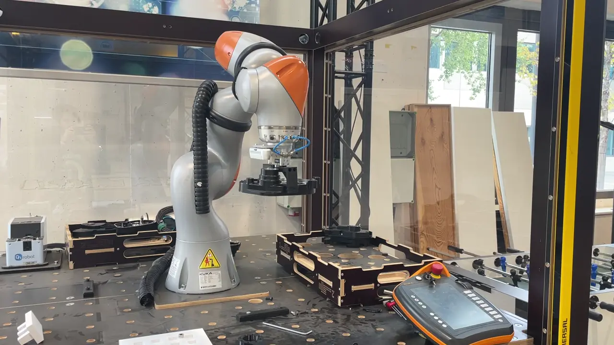
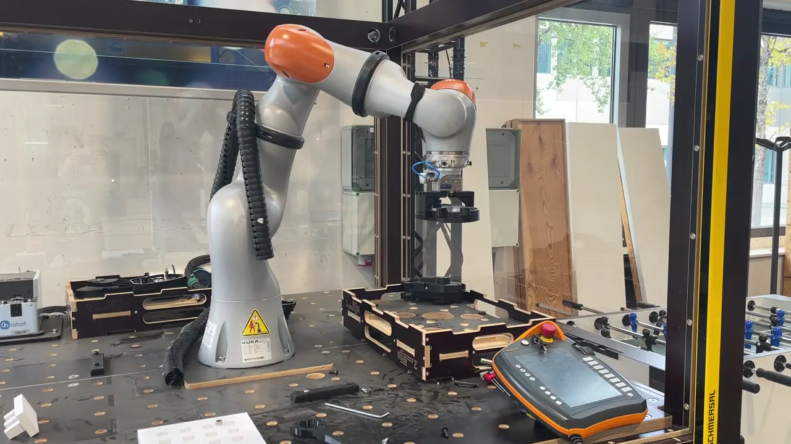
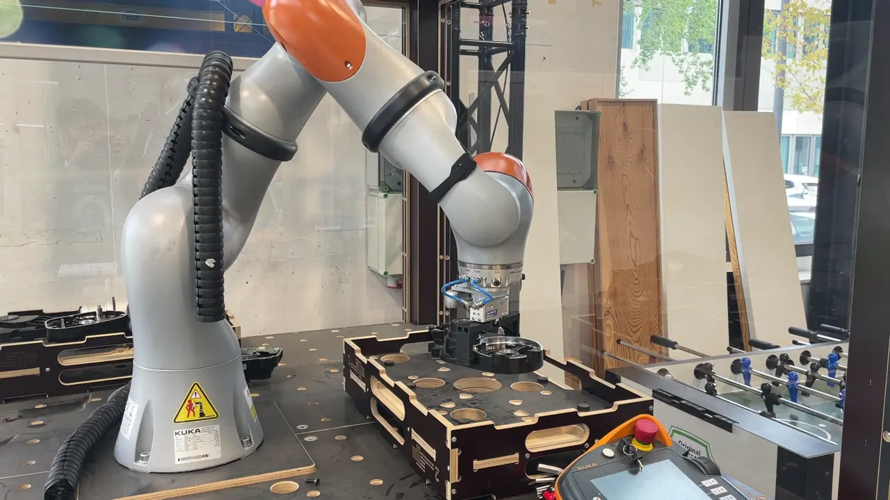
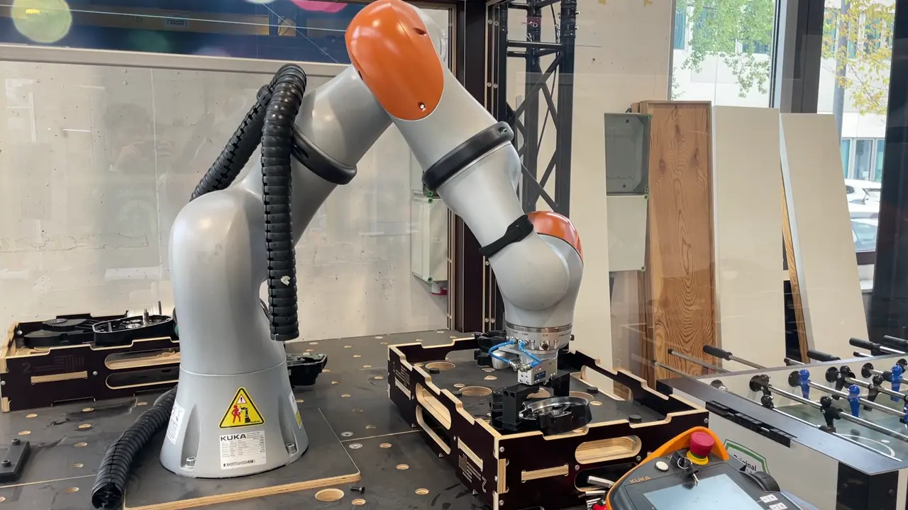

Perception to pick on a KUKA iiwa
At the WZL Smart Automation Lab, I built and tested the path from a RealSense image to a gripper action, for an LLM task planner in a disassembly cell.
- Lab
- WZL Smart Automation Lab, RWTH Aachen
- Role
- Physical AI Research Assistant, 2026 to present
- Hardware
- KUKA iiwa, RealSense camera, NVIDIA Jetson AGX Orin
Six stages, each tested on the hardware
- DetectYOLOE-26s-seg with pretrained weights finds the requested object
- SegmentThe same model returns its mask
- LocalizeRealSense input gives the object's 3D position
- TransformThe calibrated camera-to-robot transform moves it into the iiwa base frame
- MoveDeterministic MoveIt skills: approach, grasp, lift, move to place, release, retreat
- GripGripper control over OPC UA
Validated object poses are handed to the MoveIt skills. The planner is meant to call high-level functions such as detect_object(), segment_object() and localize_object() rather than see camera images or YOLO internals.
Planning and safety
The planner turns natural-language instructions into structured actions from an action and parameter library, grounded by retrieval in the live world state. Before anything is dispatched, a hard-coded validation layer checks each action against kinematic and safety bounds. The ROS 2 execution layer returns success or failure to the planner for the next step.
The local LLM planner and the ROS 2 execution layer run on an NVIDIA Jetson AGX Orin.




Scope
- ModelThe detector uses pretrained YOLOE-26s-seg weights. It was not trained or fine-tuned here.
- TestingDetection, segmentation, RealSense localization, frame transformation, gripper control and the MoveIt pick-and-place skills were each tested on the hardware.
- Edge computeLatency and compute on the Jetson have not been measured yet.